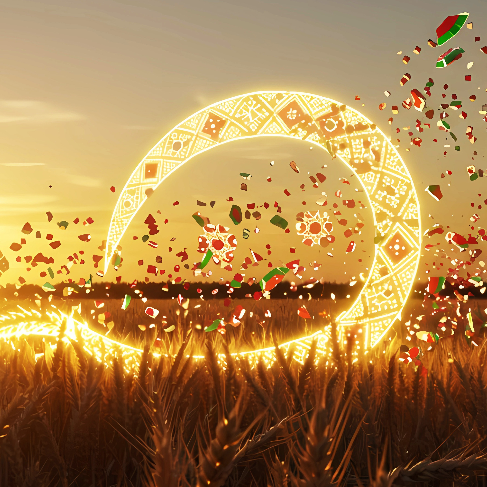
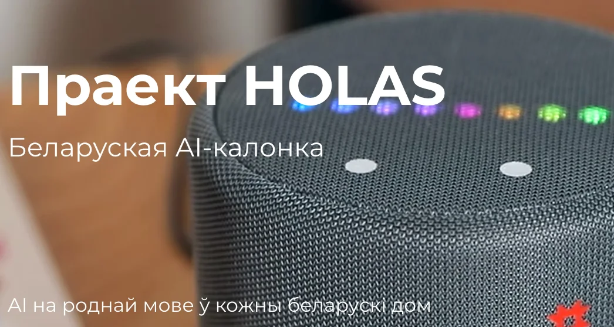

YouTube і падкаст
Цёмны Лёс
Размовы з беларусамі пра іх працу,
навуку і творчасць.
Досвед выкарыстання ШІ.
Беларуская мова ў эпоху ШІ
01 / 22
Праграміст і выкладчык.
Пра тэхналогіі па-беларуску.
Фізічны факультэт.
Атамна-малекулярная фізіка
і
фізічная інфарматыка.
Ад першых сайтаў
да камерцыйнай распрацоўкі
і
працы з ШІ.
Курс праграмавання з ШІ
для студэнтаў у School of
Digital
Competencies, Вільня.
Мае праекты
02 / 22YouTube і падкаст
Размовы з беларусамі пра іх працу,
навуку і творчасць.
Досвед выкарыстання ШІ.

Падкаст пра штучны інтэлект
Навіны ШІ ў свеце і Беларусі.
Разам з Эміліяй Гаўрус і
Яўгенам Яфімавым.
Пра мяне
03 / 22Навукоўцы і інжынеры
Дакладна, але на сваёй мове.
Не заўсёды ясна, што гэта
значыць
для ўсіх астатніх.
Шырокае кола
Хочуць зразумець, як гэта працуе
і навошта, без
спрашчэння
да лозунгаў.
→ Пераказваю простымі словамі, што зроблена, як працуе і навошта.
← Вяртаю пытанні, патрэбы і досвед людзей тым, хто будуе тэхналогіі.
Сёння іду ў абодва бакі: што распрацоўшчыкі ўжо робяць для беларускай мовы і дзе ім патрэбны досвед лінгвістаў.
Як працуе моўная мадэль · 1 / 3
04 / 22Кропкі выконваюць простыя вылічэнні.
Сувязі маюць розную сілу — «вагу».
Навучанне падладжвае гэтыя вагі.
Умоўная схема невялікай нейрасеткі. Моўныя мадэлі маюць значна складанейшую будову.
Як працуе моўная мадэль · 2 / 3
05 / 22
Токен — кавалак тэксту:
слова, яго частка ці знак.
Мадэль — сістэма, якая засвоіла
заканамернасці з
прыкладаў.
Навучальны прыклад · разбіццё ўмоўнае
Наступны фрагмент, потым яшчэ адзін
Яна
Падчас навучання змяняецца мадэль. Падчас размовы яна выкарыстоўвае кантэкст.
Як працуе моўная мадэль · 3 / 3
06 / 22
Гэта пшанічная
мука.
Чатыры праекты · агульная праблема
07 / 22Чаго шмат
Чаго не хапае
Далей — чатыры праекты і чатыры варыянты гэтай праблемы
Праект 01 · апісанне
08 / 22Куратар для сувязі: Аляксандр Клюеў · працуе з Мікітам Пілінкам
Каманда ачышчае беларускія даныя
і паляпшае пераклад з
англійскай.
Наступны кірунак — беларуская
мадэль для шырокага кола
задач.
Мала разнастайных якасных тэкстаў.
Шмат паўтораў,
моўных прымесяў
і змяшэння правапісаў.
854 сказы · BOUQuET test
+4,38 пункта BLEU, не
працэнта.
Прэпрынт, верасень 2026.
Праект 01 · як далучыцца
09 / 22
Дыялогі, лісты, субцітры,
навукова-папулярныя тэксты.
З
вядомай крыніцай і ўмовамі выкарыстання.
Выправіць памылкі распазнавання.
Пазначыць правапіс і
моўны варыянт.
Праверыць пары «арыгінал — пераклад».
Падабраць цяжкія моўныя прыклады.
Растлумачыць памылкі
перакладу.
Дапоўніць Вікіпедыю і Вікіданыя.
Праект 02 · апісанне
10 / 22Куратарка для сувязі: Аксана Воўчак · каманда BelarusianGLUE / bel-llms
тыпаў заданняў
у BelarusianGLUE
Значэнне слова, граматыка,
сувязі ў тэксце і разуменне
сэнсу.
Простыя тэсты перастаюць адрозніваць
моцныя мадэлі.
Патрэбныя складаныя
пытанні з беларускім кантэкстам.
Умоўны прыклад карэферэнцыі
Наста падзякавала Вользе,
бо
тая дапамагла.
Праект 02 · як далучыцца
11 / 22
Моўная неадназначнасць,
складаны пераклад, культурныя
рэаліі.
Адказ мусіць мець правяральную крыніцу.
Удакладніць фармулёўку.
Апісваць дапушчальныя адказы.
Размежаваць
памылку і варыянт нормы.
Незалежна праверыць мадэль.
Разабраць спрэчныя
выпадкі.
Тлумачыць прычыны разыходжанняў.
Праект 03 · апісанне
12 / 22Куратар: Ян Лобаў · сузаснавальнік праекта
Адкрыты набор прафесійных
беларускіх запісаў для
навучання
сінтэзу маўлення.
Мадэлям не хапае ўзораў з дакладнай
фанетыкай,
націскамі і натуральнай
інтанацыяй.
Бліжэйшы этап
Выбраць матэрыял для начыткі
і арганізаваць студыйныя
сесіі.
Паводле куратара · 24.09.2026
Праект 03 · як далучыцца
13 / 22
Разнастайныя спалучэнні гукаў,
тыпы сказаў і
інтанацыі.
Матэрыял з вядомымі правамі.
Амографы ў выразным кантэксце.
Імёны, лічэбнікі,
скарачэнні.
Каментарыі да складанага вымаўлення.
Дапамагчы з выбарам дыктараў.
Адзначыць арфаэпічныя
памылкі.
Праверыць натуральнасць маўлення.
Праект 03 · дзе гэта патрэбна
14 / 22
Хатні галасавы памочнік па-беларуску.
Каманда называе
яго першай такой калонкай у свеце.
Валанцёрская каманда шукае інжынераў, QA, дызайнераў, PR і маркетолагаў. Такому прадукту патрэбны сінтэз і распазнаванне беларускага маўлення.
holas.ai ↗Праект 04 · апісанне
15 / 22Куратар: Сяргей · арганізатар праекта
BexTTS агучвае тэксты.
Галасавы агент Юзік
падтрымлівае
дыялог.
Патрэбныя якасныя галасы,
правільныя націскі і
разнастайныя
інтанацыі ды эмоцыі.
Ацэнка куратара · 24.09.2026.
Аб’ём працы, а не паказчык
якасці мадэлі.
Праект 04 · як далучыцца
16 / 22
Кантэкст, значэнне, націск.
Прыклады з частотнымі
словамі.
Спрэчныя выпадкі з тлумачэннем.
Гукі, мяккасць, рытм і інтанацыя.
Адзначыць памылкі ў
дэма.
Параўнаць тэкст з аўдыязапісам.
Дапамагчы знайсці дыктараў.
Пазначаць стылі і эмоцыі.
Узгадніць
дазвол на выкарыстанне голасу.
Праца ў Беларусі · 1 / 2
17 / 22Інстытут мовазнаўства імя Якуба Коласа НАН Беларусі
Тэксты з кантэкстам і разметкай.
Ёсць гістарычныя,
дыялектныя
і аўдыяматэрыялы.
Формы слоў і моўныя пазнакі.
Аснова для праверкі
граматыкі
і працы з вымаўленнем.
Кантэкст дапамагае выбраць націск
У місцы была мука́.
Гэта была невыносная
му́ка.
Кантэкстная пастаноўка націскаў
з апорай на моўныя
рэсурсы.
Публічнае апісанне і тэсты даступныя.
Праца ў Беларусі · 2 / 2
18 / 22
Сектар камп’ютарнай лінгвістыкі развівае
корпус і
граматычную базу беларускай мовы.
Даследаванні сінтэзу і распазнавання маўлення,
галасавых
памочнікаў на беларускай мове.
У працы пра беларускі сінтэз маўлення (2024)
пазначаны
праект БРФФД Ф24-061.
Гэта прыклады інстытуцыйнай працы і падтрымкі.
Яны не даюць
поўнай карціны дзяржаўнага фінансавання беларускамоўнага ШІ.
Яшчэ адна супольная задача
19 / 22
Супольнасны гласарый
беларускай ІТ-тэрміналогіі.
Лінгвісты могуць удакладняць азначэнні,
размежаваць
значэнні і дадаваць
прыклады рэальнага ўжывання.
Прыклад для абмеркавання
Адзінка, на якую сістэма
разбівае тэкст.
Сродак пацвярджэння
права на доступ.
Практычныя парады · 25.09.2026
20 / 22Сэрвіс
ChatGPT ↗Мадэль
Наймацнейшая мадэль OpenAI
для складаных задач, паводле
кампаніі.
Reasoning effort · узровень разважанняў
Больш разважанняў можа дапамагчы
ў складаным аналізе.
Адказ зойме больш часу.
Аптымальны старт для складаных задач.
Для простай
праўкі тэксту можна выбраць ніжэйшы ўзровень.
Дадавайце крыніцы і прыклады. Правярайце факты. Даступнасць мадэлі і назвы налад залежаць ад сэрвісу і тарыфу.
Беларускасці шмат не бывае
21 / 22Далучайцеся да праектаў
22 / 22Кожны праект мае задачу,
для якой патрэбны лінгвіст.